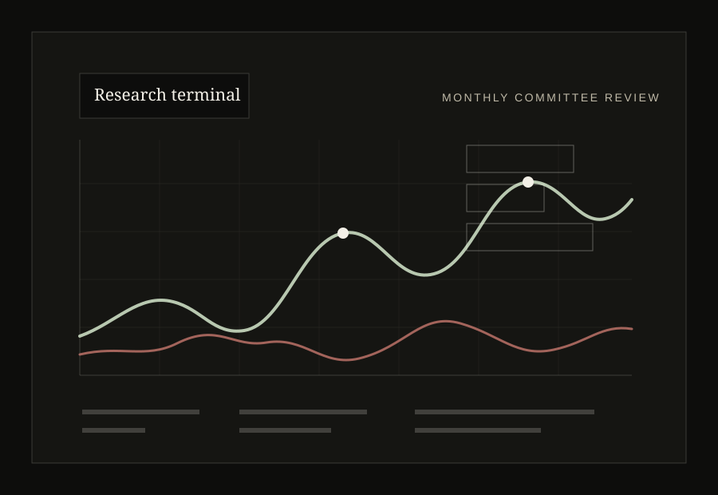

Research discipline
Every thesis begins with primary questions: what must be true, where the market may be mispricing reality, and what evidence would force us to change our mind.
Frontier investment collective
Tannenhof Mayer is being formed around a simple premise: the next generation of investors will not be built by closed rooms alone. It will be built by rigorous research, transparent debate, aligned incentives, and a community capable of finding uncommon opportunities before they become consensus.
The firm
Tannenhof Mayer is designed as a research-first investment firm. The culture is intentionally sober: document the thesis, challenge the assumptions, define the downside, then allocate only when the opportunity can survive scrutiny.
The founding vision is to gather talented people through a dedicated Discord community and convert the best collective intelligence into a durable investment organization. Participation should not mean noise. It should mean contribution, accountability, and a path toward a structure where value creation can be shared by many people rather than captured by a few.
Every thesis begins with primary questions: what must be true, where the market may be mispricing reality, and what evidence would force us to change our mind.
The long-term aim is a firm owned and strengthened by many contributors, with membership and economics developed carefully around law, governance, and durable incentives.
Frontier investing requires imagination, but imagination without risk control is speculation. We want bold theses and conservative process.
Strategy
The strategy is built around three layers: discovery, verification, and allocation. Community members can surface signals; the firm converts signals into research files, risk budgets, and decision records.
Layer 01
We build watchlists from people who are close to markets, products, code, culture, and consumer behavior. The purpose is not to chase every trend. It is to identify the few signals that deserve professional research.
Interactive markets
These sample visuals are static-site friendly but interactive: hover the charts, change regimes, and adjust conviction to see how allocation logic responds. Replace the sample data with live snapshots or internally maintained figures later.
Allocation model
Drag the conviction control. The model adjusts sample allocations while retaining a defensive reserve. It is illustrative, not financial advice.

Media and research
Publish high-quality essays that explain the market regime, the firm’s watchlist, and the arguments that changed during the month.
Turn community ideas into clean memos: summary, upside case, bear case, key risks, catalysts, and decision status.
Track what the community believed, what happened, and what was learned. Serious investors keep a record.
Ownership architecture
The long-term objective is a structure where serious contributors can participate in the upside of the institution they help build, subject to appropriate legal, regulatory, and governance design.
Members earn standing through documented research, constructive challenge, and consistent judgement.
Ideas move from open discussion to formal research review, where assumptions and risks are tested.
Any ownership or participation model should be built slowly, transparently, and with professional guidance.
Founding community
The Discord will be the first operating floor: research channels, thesis reviews, debate rooms, watchlists, and contributor reputation. The link is ready to be added when the community opens.